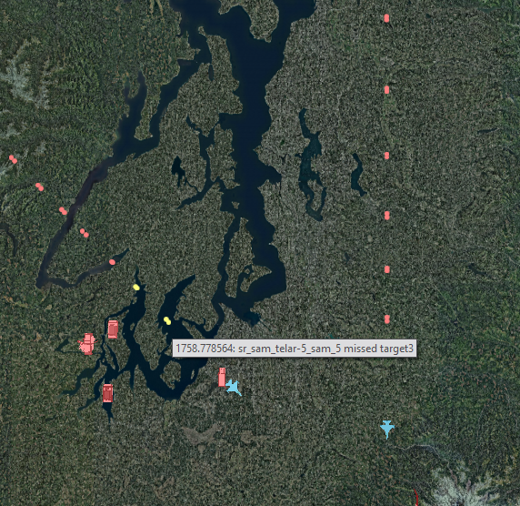
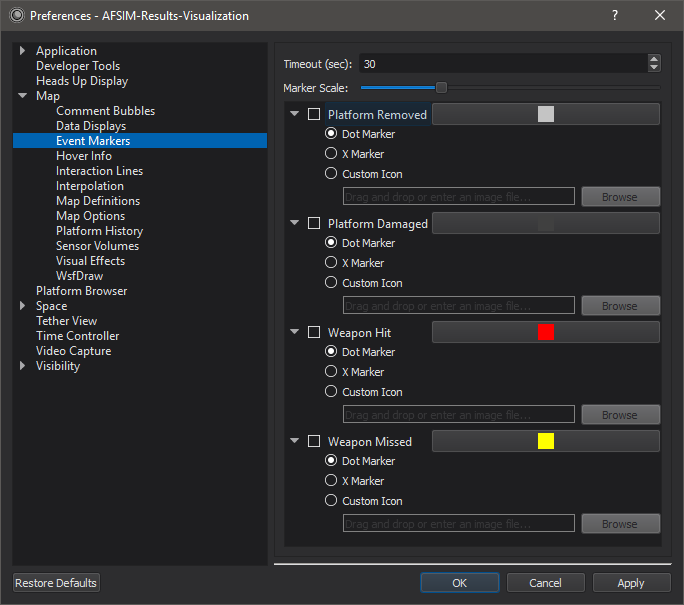

Event Marker - Warlock¶
Event markers are icons on the Map Display at locations where events have occurred. Hovering over a marker will show information about the event in a tooltip.
Preferences¶
From the preferences, the user can change the following settings related to event markers.
Timeout: Used to set the duration of the markers.
Scale: Used to scale event markers relative to the models being displayed in the scenario.
Visibility: Checking the box associated with an event determines whether it is shown on the display. Please note that unchecking a box will also discard any existing event markers related to that event type.
Color: Used to apply colors to dot markers and x-markers (does not affect custom icons)
Marker Type: Used to select the marker type. If using the custom icon setting, a preview of the selected image will be shown next to the image browser. Additionally, if the custom icon is selected with an invalid image path, the application will display dot markers instead.
Note
Event Marker preferences are shared between Warlock and Mystic.